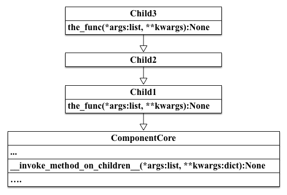
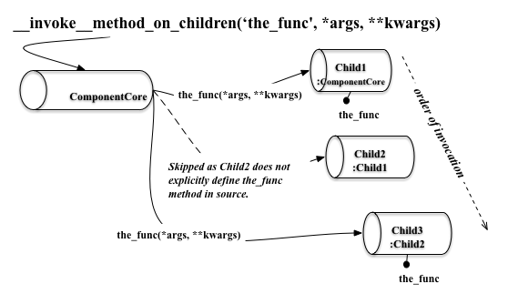

Component Core Module¶
The ComponentCore class provides the means to add some basic features for construction of service modules.
Class¶
ComponentCore¶
-
class
cognate.component_core.ComponentCore(argv=None, log=None, log_level='error', log_path=None, service_name=None, verbose=False)¶ The ComponentCore class provides configuration services for components.
Command Line Usage: ComponentCore supports the following command line options:
usage: [-h] [--service_name SERVICE_NAME] [--log_level {debug,info,warn,error}] [--log_path LOG_PATH] [--verbose] optional arguments: -h, --help show this help message and exit --service_name SERVICE_NAME This will set the name for the current instance. This will be reflected in the log output. (default:ComponentCore) --log_level {debug,info,warn,error} Set the log level for the log output. (default: error) --log_path LOG_PATH Set the path for log output. The default file created is "<log_path>/<service_name>.log". If the path ends with a ".log" extension, then the path be a target file. (default: None) --verbose Enable verbose log output to console. Useful for debugging. (default: False)Note
ComponentCore will cause the application to exit if the
-hor--helpcognate_configure arguments are one of the options. In addition to exiting, ComponentCore will display the command line help message.Any classes sharing a base class chain with ComponentCore may implement:
- cognate_options(self, arg_parser)
- cognate_configure(self, args)
This method operates by taking an options list in argparse format and creates an argument list. The argument list is generated by processing argv through argparse.ArgumentParser. The resultant arguments are applied to self.
The argument list that is obtained from sys.argv will have the path of the invoking python file. For purposes of ComponentCore configuration this argument is irrelevant. The _execute_configuration method will detect for this state and removes the path argument.
-
__init__(argv=None, log=None, log_level='error', log_path=None, service_name=None, verbose=False)¶ Initializes the ComponentCore support infrastructure.
Parameters: - argv (str, list<str>) – An array of arguments of the form [‘–verbose’, ‘–name’, ‘my_name’, ...] or an argument string of the form ‘–verboxe –name my_name’.
- log (logging.Logger) – An explicit logger. If this parameter is set, then all other log related parameters are ignored. Log parameters ignored: log_level, log_path and verbose.
- log_level (str) – The log level setting. The options for leg_level are: debug, info, warn, error. The default is error.
- log_path (str) – ‘Set the path for log output. The default file created is “<log_path>/<service_name>.log”. If the path ends with a ”.log” extension, then the path be a target file.’
- service_name (str) – This will set the name for the current instance. This will be reflected in the log output.’
- verbose (bool) – Enable verbose log output to console. Defaults to False.
Returns: ComponentCore child instance
A default ComponentCore will assume the name of the instantiating class. In addition, it will not consider the name to have been set.
>>> class Foo(ComponentCore): ... def __init__(self, **kwargs): ... super(Foo, self).__init__(**kwargs) >>> foo = Foo() >>> assert foo.service_name == 'Foo' >>> assert foo.service_name_set == False >>> assert foo.log_level == logging.ERROR >>> assert foo.log_path is None >>> assert foo.verbose == False
A ComponentCore can be configured utilizing an array style argument list.
>>> bar = ComponentCore(['--service_name','Bar','--log_level','debug']) >>> assert bar.service_name == 'Bar' >>> assert bar.service_name_set == True >>> assert bar.log_level == logging.DEBUG >>> assert bar.log_path is None >>> assert bar.verbose == False
In addition, the ComponentCore can be configured from a string.
>>> dude = ComponentCore( ... '--service_name Dude --log_level info') >>> assert dude >>> assert dude.service_name == 'Dude' >>> assert dude.service_name_set == True >>> assert dude.log_level == logging.INFO >>> assert dude.verbose == False
-
cognate_options(arg_parser: argparse.ArgumentParser) → None¶ This method will be called to get the ComponentCore configuration options.
Parameters: arg_parser (argparse.ArgumentParser) – An ArgumentParser instance to add configuration options. Returns: None
-
cognate_configure(args: typing.Dict) → None¶ This method is called by ComponentCore during instance initialization.
Parameters: args (Namespace) – An object with configuration properties. Returns: None Note
Properties set to self.
In addition to setting the configuration options to self, the args parameter has the configuration. This should allow for most complex configuration scenarios.
-
invoke_method_on_children(func_name: str=None, *args, **kwargs) → None¶ This helper method will walk the primary base class hierarchy to invoke a method if it exists for a given child base class.
Parameters: - func_name (str) – The name of a function to search for invocation.
- args (list) – An argument list to pass to the target function.
- kwargs (dict) – A dictionary of name/value pairs to pass to the target function as named arguments.
Returns: None
Raises: ValueError – Thrown if no function name is provided.
In an effort to explain, assume that a class hierarchy has been defined as in the image below:
invoke_method_on_children will traverse the class hierarchy invoking target method the_func on each child class. This is different from normal python resolution, which will only invoke the first instance of the method defined in the class hierarchy, which would be Child3.the_func.
Note
Mind the flow of invocation on the class hierarchy.
Invocation of target func_name is from the ComponentCore class as the starting point, and the search continuing out toward the final ancestor class.
::Example Usage:
To utilize this method, a function name must be provided.
Warning
Beware mistyped method names.
If a method name is supplied for a method that does not exist, the invoke_method_on_children will raise no exception.
>>> foo = ComponentCore() >>> foo.invoke_method_on_children() Traceback (most recent call last): ... ValueError: invoke_method_on_children:func_name parameter required >>> # Now correctly >>> foo.invoke_method_on_children(func_name='the_func')
In actual usage, declare a ComponentCore derived child class with a target function. It is possible to have more than one ancestor class with the target function defined. The invoke_method_on_children will execute the function on each of the child classes.
>>> class Bar(ComponentCore): ... def the_func(self, a_key=None): ... print('a_key:', a_key) >>> bar = Bar()
With an instance of a AttributeHelper child class, we can invoke the method in two ways, as exampled below.
>>> # Create a keyword argument dictionary or argument list >>> kwargs = {'a_key':'a_value'} >>> bar.invoke_method_on_children(func_name='the_func', **kwargs) a_key: a_value >>> # Simply pass the argument keyword and value >>> bar.invoke_method_on_children( ... func_name='the_func', a_key='value') a_key: value
Functions¶
copy_attribute_values¶
-
cognate.component_core.copy_attribute_values(source: object, target: object, property_names: typing.List) → None¶ Function to copy attributes from a source to a target object.
This method copies the property values in a given list from a given source object to a target source object.
Parameters: - source (type) – The source object that is to be inspected for property values.
- target (type) – The target object that will be modified with values found in src.
- property_names (list, set) – List of property names whose values are to be copied from source to object.
Return type: None
Raises: - ValueError – If src is None.
- ValueError – If target is None.
- ValueError – If property list is not iterable or None.
The copy_attribute_values method will only copy the values from src when a property name is found in the src. In cases where a property value is not found in the src object, then no change to the target object is made.
Example Usage: >>> src = type('attr_bag', (object,), dict()) >>> src.property1 = 1 >>> src.property2 = 2 >>> src.property3 = 3 >>> target = type('attr_bag', (object,), dict()) >>> property_list = ['property1', 'property2', 'exist_not_property'] >>> copy_attribute_values(src, target, property_list) >>> assert hasattr(target, 'property1') >>> assert hasattr(target, 'property2') >>> assert not hasattr(target, 'property3') >>> assert not hasattr(target, 'exist_not_property')